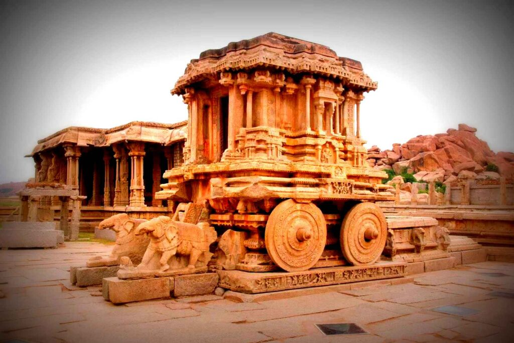
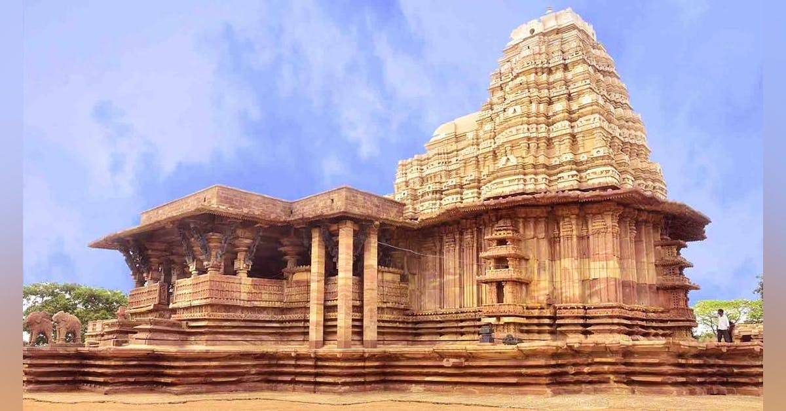
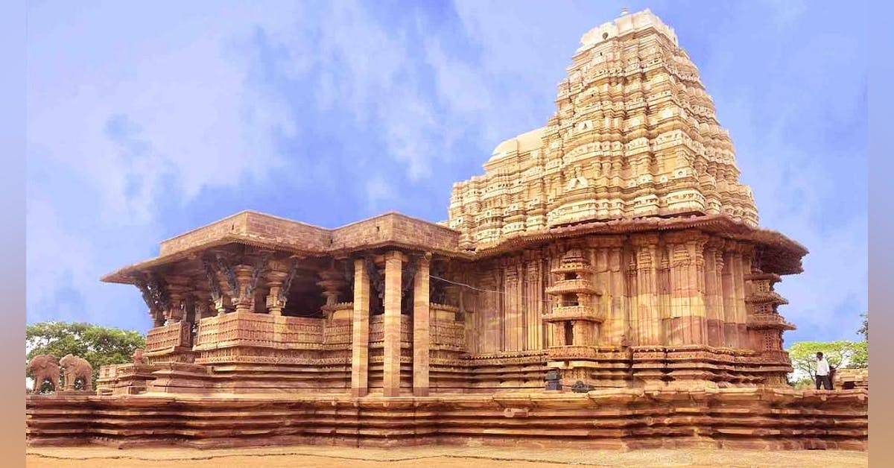
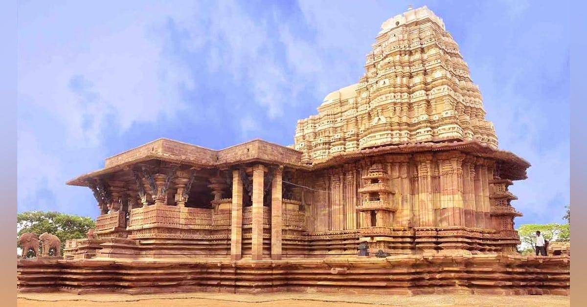

Our history - Our Temples
Nagara Style

The Nagara style of temple architecture is prevalent in northern India. It is characterized by beehive-shaped towers called Shikharas. Examples include the Khajuraho temples and the Sun Temple at Konark.
Dravida Style

The Dravida style is common in southern India. It features pyramid-shaped towers called Vimanas and elaborate gateways known as Gopurams. Notable examples are the Brihadeeswarar Temple and the Meenakshi Temple.
Vesara Style

The Vesara style is a blend of Nagara and Dravida styles, found mainly in the Deccan region. The Chennakesava Temple and the Hoysaleswara Temple are prime examples.
Timeline
An interactive timeline of major developments in Indian temple architecture.
- Early Beginnings (3rd Century BCE – 3rd Century CE)
Stupa Architecture: The earliest forms of religious architecture in India were stupas, primarily associated with Buddhism. The Great Stupa at Sanchi (3rd century BCE) is a classic example.
Rock-Cut Temples: Early rock-cut temples, like the Barabar caves from the Mauryan period, were simple in design and carved from solid rock - Gupta Period (4th – 6th Century CE)
Structural Temples: Transition from rock-cut to structural temples made of stone and brick. The Dashavatara Temple at Deogarh is a prominent example.
Introduction of Shikhara: The shikhara (tower) over the sanctum became a significant feature - Early Medieval Period (7th – 10th Century CE)
Nagara Style: Northern Indian temples, characterized by beehive-shaped shikharas. Examples include the temples at Khajuraho.
Dravida Style: Southern Indian temples, characterized by pyramid-shaped vimanas. The Shore Temple at Mahabalipuram - Later Medieval Period (11th – 13th Century CE)
Vesara Style: A blend of Nagara and Dravida styles, seen in the temples of Karnataka, like the Hoysaleswara Temple at Halebidu.
Chola Architecture: Grand temples with towering vimanas, such as the Brihadisvara Temple at Thanjavur - Mughal Period (16th – 18th Century CE)
Syncretic Styles: Incorporation of Islamic architectural elements into Hindu temples, seen in temples like the Govind Dev Ji Temple in Vrindavan - Modern Period (19th Century CE – Present)
Revival and Innovation: Modern temples often blend traditional styles with contemporary materials and techniques. The Akshardham Temple in Delhi is a prime example
Gallery


 

